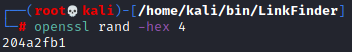
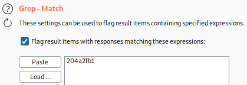

Reflected XSS (Non-Persistent)
Reflected attacks happen when an input field(with a malicious payload) carried inside of a HTTP request(sent by the browser of the victim to the vulnerable website) gets reflected in the victim output page.
The attack can be triggered when a user click on the modified link
Testing for reflected & stored XSS vulnerabilities manually involves the following steps
:1.
Test every entry point. Test separately every entry point for data within the application's HTTP requests. This includes:
◇ parameters within the URL query string (GET requests) and in the message body (POST requests)
▪ see chapter
Enumerate Parameters to find the parameters to be tested(with Arjun)
2.
Submit random alphanumeric values. For each entry point, submit a unique random value and determine whether the value is reflected in the response. The value should be designed to survive most input validation, so needs to be fairly short and contain only alphanumeric characters. But it needs to be long enough to make accidental matches within the response highly unlikely. A random alphanumeric value of around 8 characters is normally ideal.
You can use:
◇ Openssl to generate random 4 bytes (8 hex symbols) and encode in hex
 ◇ Burp Intruder's grep payloads option to automatically flag responses that contain the submitted value.
3.
Determine the reflection context. For each location within the response where the random value is reflected, determine its context. This might be in text between HTML tags, within a tag attribute which might be quoted, within a JavaScript string, etc.
◇ see chapter
Determine location of the request in the response4.
Test a candidate payload. Based on the context of the reflection (HTML content, tag attribute, existing Javascript code) determined with the previous point, test an initial candidate XSS payload that will trigger JavaScript execution if it is reflected unmodified within the response.
◇ see chapter
Determine location of the request in the response5.
Test alternative payloads. If the candidate XSS payload was modified by the application, or blocked altogether, then you will need to test alternative payloads and techniques that might deliver a working XSS attack based on the context of the reflection and the type of input validation that is being performed.
◇ see chapter
WAF bypass and filter tests6.
Test the attack in a browser. Finally, if you succeed in finding a payload that appears to work within Burp Repeater, transfer the attack to:
◇ A browser by for example pasting the URL into the address bar (Note that the browsers could have Built-in XSS filter)
◇ Burp Proxy's intercept view
Then see if the injected JavaScript is executed.
What is the difference between reflected XSS and self-XSS? Self-XSS involves similar application behavior to regular reflected XSS, however it cannot be triggered in normal ways via a crafted URL or a cross-domain request. Instead, the vulnerability is only triggered if the victim themselves submits the XSS payload from their browser. Delivering a self-XSS attack normally involves socially engineering the victim to paste some attacker-supplied input into their browser. As such, it is normally considered to be a lame, low-impact issue.
Built-in XSS filter in BrowsersSome browsers
for the security of the user have built-in reflected XSS filter
Anyway the reality is that they can filter only known XSS attacks. Advanced attacks can bypass XSS filter of the browser
Anti-XSS filters of a browser can not block
persistent XSS